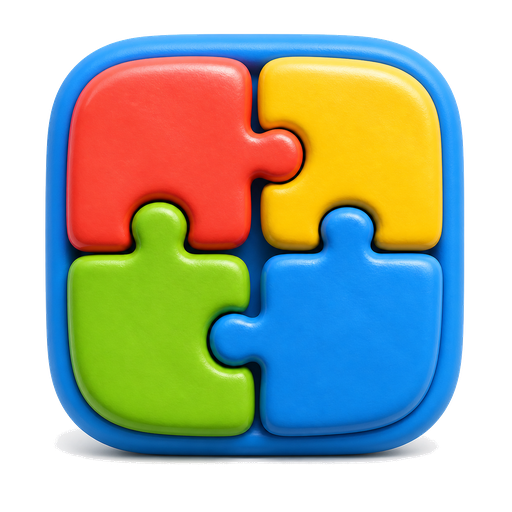
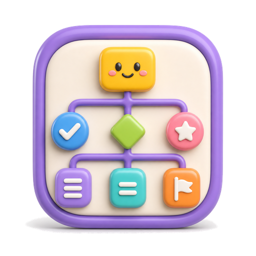

🖨 直接 Ctrl+P 打印本页（A4，默认边距）。学生匿名填写，纸质回收，不录入任何系统。
编程课小问卷（匿名 · 约 3 分钟）
没有对错，选你真实的想法。不写名字。
1. 课上的两个 AI 搭档形象——小狐（帮你写代码的）和小枭（只提问让你自己写的），你觉得：
2. 你更希望 AI 是：
3. 下面六个小图标，你觉得它们分别代表什么？（按界面里的真实大小印出，看不清就写"看不清"）

A
B

C
D
E
F
A
B
C
D
E
F
（老师页 · 只问 2 位老师）你会把教研页面的截图放进评审/结题材料吗？